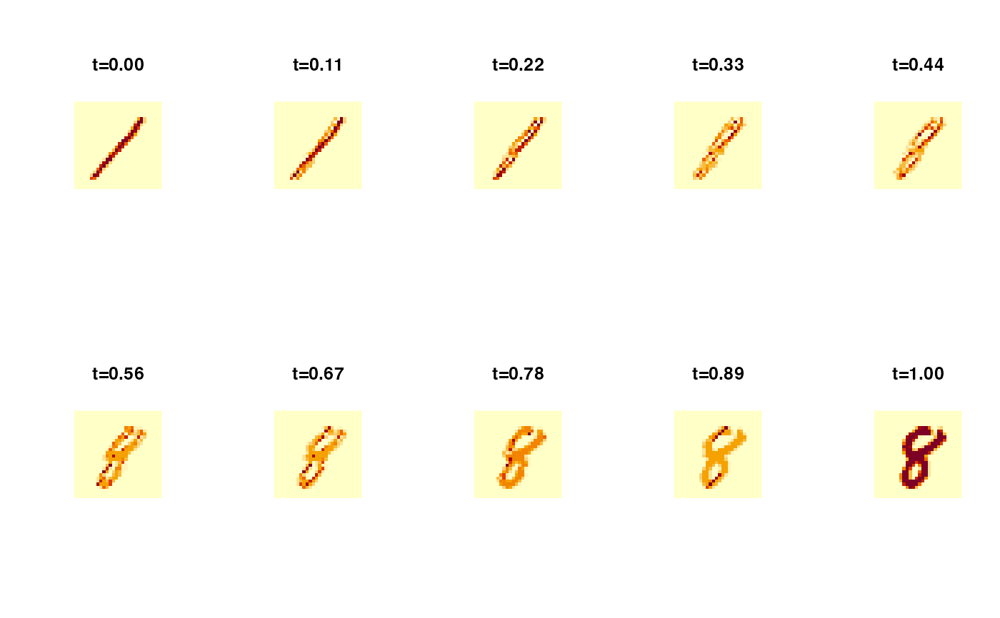

Interpolation between Images
imageinterp.RdGiven two grayscale images represented as numeric matrices of identical size, compute interpolated images along a 2-Wasserstein geodesic connecting them. The function interprets each image as a discrete probability distribution on a common \((m\times n)\) grid, computes an exact optimal transport plan, and constructs intermediate measures by pushing the plan through the linear interpolation map \(z=(1-t)x+t y\) (displacement interpolation / McCann's interpolation).
Arguments
- image1
a grayscale image matrix of size \((m\times n)\) with nonnegative entries.
- image2
another grayscale image matrix of size \((m\times n)\) with nonnegative entries.
- t
a scalar or numeric vector in \([0,1]\) specifying interpolation times.
t=0returnsimage1,t=1returnsimage2.- ...
extra parameters including
- eps
positivity floor applied after normalization (default:
1e-15). Larger values can improve robustness.- abstol
tolerance used for internal mass checks (default:
1e-12).- print.progress
logical; if
TRUE, print basic diagnostics (default:FALSE).
Value
If length(t)==1, a single \((m\times n)\) matrix representing the interpolated image.
If length(t)>1, a length-length(t) list of \((m\times n)\) matrices.
Details
Because the interpolated support locations generally do not coincide with
the original grid points, the resulting distribution is projected back onto
the grid by depositing transported mass to the nearest grid location.
This is a simple and robust "re-binning" step, analogous in spirit to how
histinterp re-bins interpolated quantile samples.
Examples
# \donttest{
#----------------------------------------------------------------------
# Digit Interpolation between 1 and 8
#----------------------------------------------------------------------
# LOAD DATA
set.seed(11)
data(digits)
x1 <- digits$image[[sample(which(digits$label==1),1)]]
x2 <- digits$image[[sample(which(digits$label==8),1)]]
# COMPUTE
tvec <- seq(0, 1, length.out=10)
path <- imageinterp(x1, x2, t = tvec)
# VISUALIZE
opar <- par(no.readonly=TRUE)
par(mfrow=c(2,5), pty="s")
for (k in 1:10){
image(path[[k]], axes=FALSE, main=sprintf("t=%.2f", tvec[k]))
}

par(opar)
# }